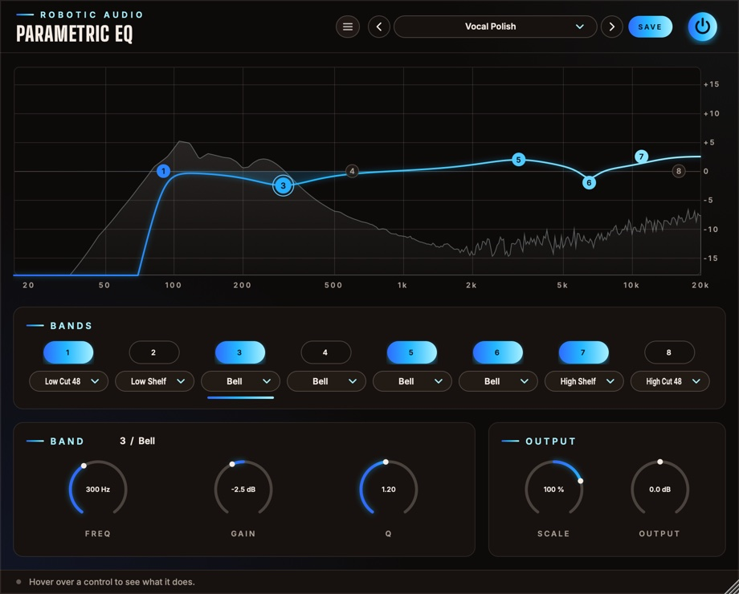

Parametric EQ
Eight bands, each any filter you need: steep cuts, shelves, bells and notches, dragged straight on the graph over the live spectrum of what comes out. Quick enough for everyday mixing, precise enough for surgery.
- 8 bands
- 8 filter types
- 12 and 48 dB/oct cuts
- Drag on the graph
- Scale every gain at once
- Live spectrum
- 8 factory presets
- AU · VST3 · Standalone

Quick start
From flat to finished.
Insert it
At Default it does nothing: bands 2–7 are on but flat, the two cuts (1 and 8) are off.
Drag a dot
Sideways for the frequency, up or down for the gain. Scroll on it for the width (Q).
Cut the rumble
Double-click dot 1 to switch the low cut on, then drag it up to just under the lowest note you want to keep.
Match the level
Use Output to match the level after boosting, then compare with the power button.
The window
The graph, the bands, the selected band.
- Header
- The preset bar (previous, next, the list, SAVE), the power button (bypass) and the menu (three lines) with this manual. Click the logo for the version and credits. With an AI key, a >_ beside the preset bar opens the designer.
- Graph
- The whole EQ's curve and the eight numbered dots over the output's spectrum. See The graph.
- Bands
- A switch (1–8) and a type menu per band. Click either to select that band; a lit line under its menu marks the selected one.
- Band
- The selected band's number and type in the title, and its Freq, Gain and Q knobs.
- Output
- Scale and Output.
- Tooltip strip
- Along the bottom: what the control under the mouse does.
The window can be resized: drag its bottom-right corner.
The graph
Where most of the work happens.
Frequency runs across (20 Hz to 20 kHz, logarithmic), gain up and down (±15 dB). The bright line is the whole EQ's real response; the selected band's own shape is shaded under it in its colour.
| Do this | To |
|---|---|
| Click a dot | select its band |
| Drag a dot sideways | move its frequency |
| Drag a dot up or down | boost or cut (bells and shelves); for cuts and notches, a sharper (higher) Q |
| Scroll on a dot (or anywhere, for the selected band) | change its Q |
| Double-click a dot | switch its band on or off |
Dots of bands that are off are drawn dim, so you can still grab and move them. The spectrum behind is the output's, tilted so music looks roughly level; it settles when the sound stops.
Band types
Any band can be any type.
- Low Cut 48
- Removes everything below the frequency, steeply (48 dB per octave): rumble, handling noise, mud on tracks that don't need lows. Q sets the resonance at the corner.
- Low Cut 12
- A gentle low cut (12 dB per octave). With a high Q it peaks at the corner: a classic resonant high-pass.
- Low Shelf
- Raises or lowers everything below the frequency.
- Bell
- Boosts or cuts round the frequency; Q is how narrow.
- Notch
- Removes a narrow band entirely: hum, a whistle, a ringing tom. Higher Q is narrower.
- High Shelf
- Raises or lowers everything above the frequency.
- High Cut 12
- A gentle high cut (12 dB per octave), resonant with a high Q.
- High Cut 48
- Removes everything above the frequency, steeply.
Switching a band on or off, or to another type, crossfades it over 10 ms, so it never clicks, even while playing. Frequency, gain and Q glide when they move, so sweeps and automation stay smooth.
Band and output
Numbers for what the dots do, and two controls for everything.
Band
- On (1–8)
- Each band's switch, in the Bands card. Off, a band costs nothing.
- Type
- The band's filter (see Band types).
- Freq
- Where the band works. 20 Hz … 20 kHz
- Gain
- Boost or cut, for bells and shelves (greyed out for cuts and notches). ±15 dB
- Q
- The width: higher is narrower. For cuts, the resonance at the corner. 0.71 is the default: smooth, no peak. 0.10 … 18
Output
- Scale
- Every band's gain, scaled: 100 % as set, 50 % half as much, 0 % flat, and negative turns boosts into cuts. Cuts and notches are left alone. −200 … +200 %
- Output
- The level after the EQ, to match a boost or a cut. ±18 dB
Presets
Eight starting points, and room for your own.
| Preset | What it does |
|---|---|
| Default | Flat: bands 2–7 on at 0 dB, cuts off. |
| Vocal Polish | Low cut at 90 Hz, less boxiness at 300 Hz, presence at 3.2 kHz, a little less sibilance at 6.5 kHz and air on top. |
| Kick Punch | Weight at 60 Hz, less cardboard at 350 Hz, click at 4 kHz. |
| Bass Tighten | Low cut at 35 Hz, a low shelf, less mud at 250 Hz and a gentle high cut at 5 kHz. |
| Mix Bus Air | A gentle low cut, a touch of low shelf, a wide dip at 400 Hz and a high shelf. |
| Hum Notch | Notches at 50, 100 and 150 Hz for mains hum. |
| Telephone | Steep cuts at 400 Hz and 3.2 kHz, the middle pushed. |
| Resonant Sweep | Resonant 12 dB cuts at both ends, ready to automate. |
Press SAVE in the header to keep your own. The preset menu has Save As, Delete and Open Folder. An asterisk after the preset's name means you've changed something since loading it. Every control is a host parameter and can be automated.
Designing with Claude
Describe a sound; Claude sets Parametric EQ to make it.
With your own Anthropic key, the >_ beside the presets opens a designer: describe what you want in your own words, such as "clean up the mud, tame the 3 kHz bite, add a little air", and Claude sets every control you could automate: each band's type, frequency, gain and Q, and the output. It is told what every part does and how it is set now, so it can design from scratch or change only what you ask for.
- Keys
- Menu (three lines) > AI...: an Anthropic key for Claude. They are your own, shared by every Robotic Audio plugin and kept on this computer, never in sessions or presets; each design uses your credits with the service. Without a key nothing of this shows.
- >_
- Left of the preset bar, while a key works: opens the designer over the window. Type a description and press Return (or EXECUTE); ESC closes it, and what is running carries on.
- NEW SOUND / EDIT THIS
- NEW SOUND designs a new patch from your words; EDIT THIS changes the patch as it is, as you ask ("brighter", "less", "more subtle"), keeping the rest.
- REVERT
- Puts the patch back as it was before Claude's last design.
- SAVE AS PRESET
- Keeps the design as one of your presets, named after your words.
- The log
- What Claude made, and what it changed, part by part.
- >_ and AI...
- The designer and its keys: see Designing with Claude.
Recipes
Settings to start from; then use your ears.
A Bell at +12 dB, Q 6. Sweep it until something rings or honks, then pull the gain down to −4 dB.
Hum Notch, then move the three notches to 60, 120 and 180 Hz.
Low Cut 48 at 200 Hz and High Cut 48 at 6 kHz for a voice in another room, or a bass in a breakdown.
Resonant Sweep, then automate band 1's Freq from 20 Hz up to 1 kHz over eight bars.
Mix Bus Air at Scale 50 %: the same tilt, half as strong.
Specifications
The numbers.
| Property | Value |
|---|---|
| Bands | 8, in series, each with its own type |
| Types | Low Cut 48 and 12, Low Shelf, Bell, Notch, High Shelf, High Cut 12 and 48 |
| Range | 20 Hz – 20 kHz; ±15 dB; Q 0.1 – 18; output ±18 dB; Scale ±200 % |
| 48 dB cuts | Four Butterworth stages; Q sets the resonance of the last |
| Switching | On, off and type changes crossfade over 10 ms |
| Spectrum | 4096-point FFT of the output |
| Latency | None |
| CPU | Bands that are off, or flat bells and shelves, cost nothing; rests while silence comes in |
| Channels | Stereo (mono tracks work too) |
| Formats | AU, VST3, Standalone |